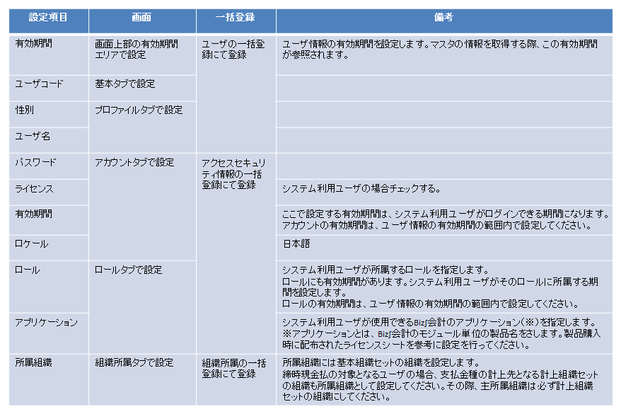

1.5. ユーザ・従業員登録¶
Biz∫会計のユーザ情報、および従業員情報を登録します。ユーザのライセンスを有効にします。
コラム
Biz∫会計は、システム利用ユーザと従業員の情報を同一のマスタに保持しています。債務管理モジュールを用いて従業員に対する支払処理を行う場合、従業員情報の登録を必要とします。
システム利用ユーザ：Biz∫会計の各機能を利用するユーザ。
従業員：Biz∫会計で支払先や入金先として使用できるユーザ。
1.5.1. 着手条件¶
基本組織セットへの組織の登録を終えていること。
1.5.2. 実行手順¶
ユーザの項目は以下のように登録します。

コラム
パブリックグループタブ、分類設定タブの情報については、登録不要です。
コラム
アプリケーションには、ユーザに対して利用するアプリケーションライセンスを登録してください。なお、債権債務モジュールは、債権管理と債務管理で構成されています。債権管理と債務管理とを両方利用するユーザの場合、1ユーザで2ライセンスが必要となります。

1.5.2.1. 画面から登録する場合¶
テナント管理者権限でテナント管理画面にログインし、各ユーザおよび従業員について設定の必要な項目を登録します。
メニュー
テナント管理 共通マスタ ユーザ
登録を行ったのち、当該情報を再度表示し、「組織所属」タブに登録した組織のうち、主所属とする組織を選択し、「所属期間」を押下します。
主所属にチェックを入れ、更新を押下します。
コラム
ユーザ登録画面の詳細はイントラマート社提供のマニュアル「IM-共通マスタ 管理者操作ガイド」を参照ください。
ロールをロール別アカウント一覧から設定する場合
ロール単位に対象となるユーザを登録する場合には、ロール画面から対象となるロールの「ユーザコード一覧ボタン」から対象ユーザの登録を行います。
メニュー
テナント管理 ロール
1.5.2.2. 一括登録する場合¶
1.5.2.2.1. ユーザの一括登録¶
取込みファイルの準備
シート「マスタ設定シート_ユーザ.csv」の所定のフォーマットに従って項目を埋めたcsvファイルを準備します。
コラム
有効期間は、取込設定ファイルで<start-date>、<end-date>を指定することで設定可能です。その場合、一度の取込で一つの期間しか指定できません。また、xmlファイルでの取り込みをすれば、個々のユーザに対して期間を指定することができます。xmlファイルでの取込については、「IM-共通マスタ インポート・エクスポート仕様書」を参照してください。
取込設定ファイルのユーザインポート設定例
<user-import> <format>csv</format>・・・・・・・・・・取込ファイルのフォーマット <encoding>SJIS</encoding>・・・・・・文字コード <extension-param name="with-header">true</extension-param >・・・・・・・ヘッダー有無 <start-date>2021-04-01</start-date>・・・・・・・・・・インポート開始日 <end-date>3000-01-01</end-date>・・・・・・・・・・・インポート終了日 <name>name</name> <file type="user">im_master/data/user.csv</file>・・・インポートターゲットファイル(ユーザ) </user-import>
CSVファイルの配備
以下の設定ファイルに定めたパスとファイル名にしたがって各csvファイルを配置します。
<パブリックストレージ>/im_master/config/import_config.xml
コラム
パブリックストレージのパスについては、Biz∫APFの逆引き(Cookbook)ストレージパスを確認するを参照してください。
インポートバッチの実行
テナント管理者権限でテナント管理画面にログインし、ジョブネット設定画面からユーザインポートを行います。
メニュー
テナント管理 ジョブ管理 ジョブネット設定
ジョブネット一覧より「ユーザ」を選択し、実行します。
ジョブネット一覧
IM共通マスタ インポート ユーザ
ジョブにてcsvファイルをインポートします。
インポート結果をユーザ画面で確認し、画面から有効期間を設定してください。
1.5.2.2.2. アクセスセキュリティ情報の一括登録¶
取込みファイルの準備
シート「マスタ設定シート_アクセスセキュリティ情報.csv」の所定のフォーマットに従って項目を埋めたcsvファイルを準備します。
コラム
アカウント付与ロール情報は、ユーザコード毎に「ロールID」「ロール有効開始日」「ロール有効終了日」をデータ件数分繰り返して設定します。
アプリケーションライセンス情報は、ユーザコード毎に「プロダクトID」をデータ件数分繰り返して設定します。
詳細は、intra-mart Accel Platformの「アカウントインポートデータ定義書」を参照ください。
CSVファイルの配備
<パブリックストレージ>配下にCSVファイルを配置します。
コラム
パブリックストレージのパスについては、Biz∫APFの逆引き(Cookbook)ストレージパスを確認するを参照してください。
インポート処理の実行
テナント管理者権限でテナント管理画面にログインし、アクセスセキュリティ情報入出力画面からアカウントのインポートを行います。
メニュー
テナント管理 ジョブ管理 ジョブネット設定
ジョブネット一覧より「アカウントインポート」を選択し、実行します。
ジョブネット一覧
テナントマスタ インポート(CSV) アカウントインポート(CSV)
ジョブにてcsvファイルより各種情報がインポートされます。
1.5.2.2.3. 所属組織情報の一括登録¶
取込みファイルの準備
「マスタ設定シート_組織所属.csv」の所定のフォーマットに従って項目を埋めたcsvファイルを準備します。
コラム
基本組織セットのいずれかの組織に主所属を設定する必要があります。
CSVファイルの配備とインポートバッチの実行
一括登録により組織の登録を行う場合と同じ手順で、csvファイルを取り込みます。
1.5.3. 完了条件¶
登録したユーザを以下の画面から確認します。
メニュー
テナント管理 共通マスタ ユーザ
ロール別の対象ユーザ一覧を以下の画面から確認します。
メニュー
テナント管理 ロール